Some mornings call for coffee. December mornings call for finding the elf before the kids beat you to it. These 24 Elf on the Shelf ideas can help create fun Christmas moments without turning the kitchen into a North Pole production set every single night.
The best setups rarely need much. A few cereal pieces, some toilet paper, a favorite toy, or a handwritten note can turn an ordinary morning into something the kids talk about all day.
That actually matters. An hour spent building an elaborate elf scene at 11:47 p.m. is an hour that could've gone toward tomorrow's lunch boxes instead.
The trick is choosing ideas that look magical but take very little effort to actually pull off.
The 24 setups below run in roughly that order, starting with the elf's actual goodbye on Christmas Eve and working backward toward the easy, five-minute scenes worth keeping in rotation for the rest of December.

How Do You Make Elf on the Shelf Easy?
The biggest mistake with this tradition is making every single setup too complicated.
The easiest scenes often create the biggest reaction. Kids don't necessarily care whether 45 minutes went into constructing a tiny ski resort. They care that their elf is sitting inside the cereal box wearing a sock as a hat.
Keeping a small box nearby with reusable supplies solves most of the planning problem before it starts:
- Mini marshmallows
- String
- Sticky notes
- Cotton balls
- Toilet paper
- Candy canes
- Small toys
- Paper and markers
- Ribbon
- Plastic cups
- A favorite snack or two
Five minutes of prep ahead of time can save a genuine late-night panic. Quick five-minute ideas, crafts, printables, recipes, and classroom activities all count as fair options too, none of it demands complicated props to stay interesting.
Now for the fun part.
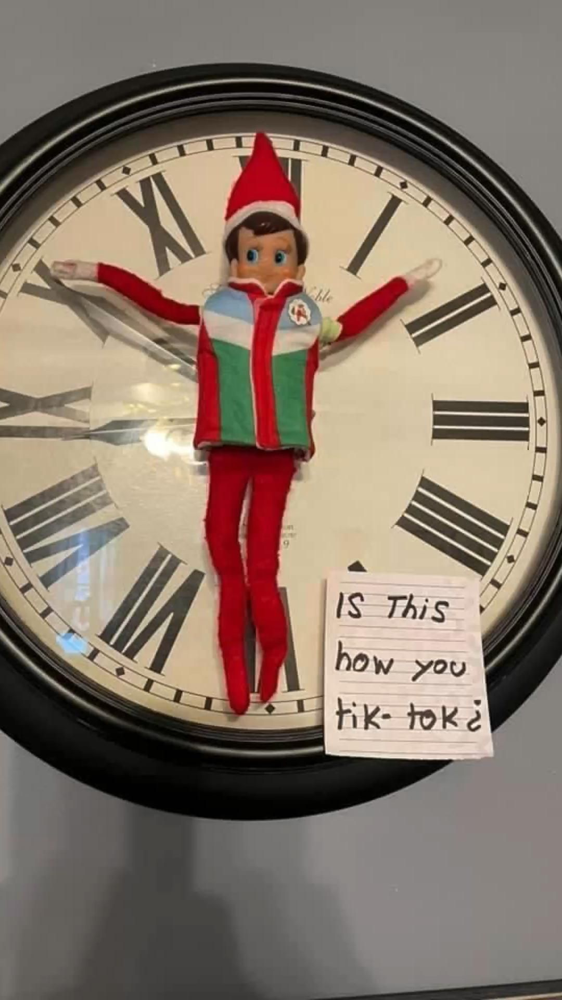
What Is the Elf on the Shelf Tradition?
The tradition centers on a Scout Elf who visits a family during the Christmas season. The elf supposedly watches what happens during the day, returns to the North Pole at night, and comes back to a different hiding spot the next morning.
Scout Elves can't talk, but they're meant to be great listeners. That detail makes the whole thing surprisingly fun, kids can tell the elf secrets, share Christmas wishes, or explain what happened at school while the elf silently sits there looking suspiciously judgmental.
The basic tradition gives plenty of flexibility too. Simple hiding spots, funny scenes, little surprises, or small activities all fit depending on a family's personality, with countless photos and instructions out there for inspiring new landing spots and playful setups.
Recreating an elaborate Pinterest scene every single night was never actually the requirement. The elf works best when the tradition gets shaped around the family using it, not the other way around.
That one shift in mindset, treating the elf as a flexible tradition rather than a nightly performance review, is honestly what makes the whole month easier to actually enjoy.
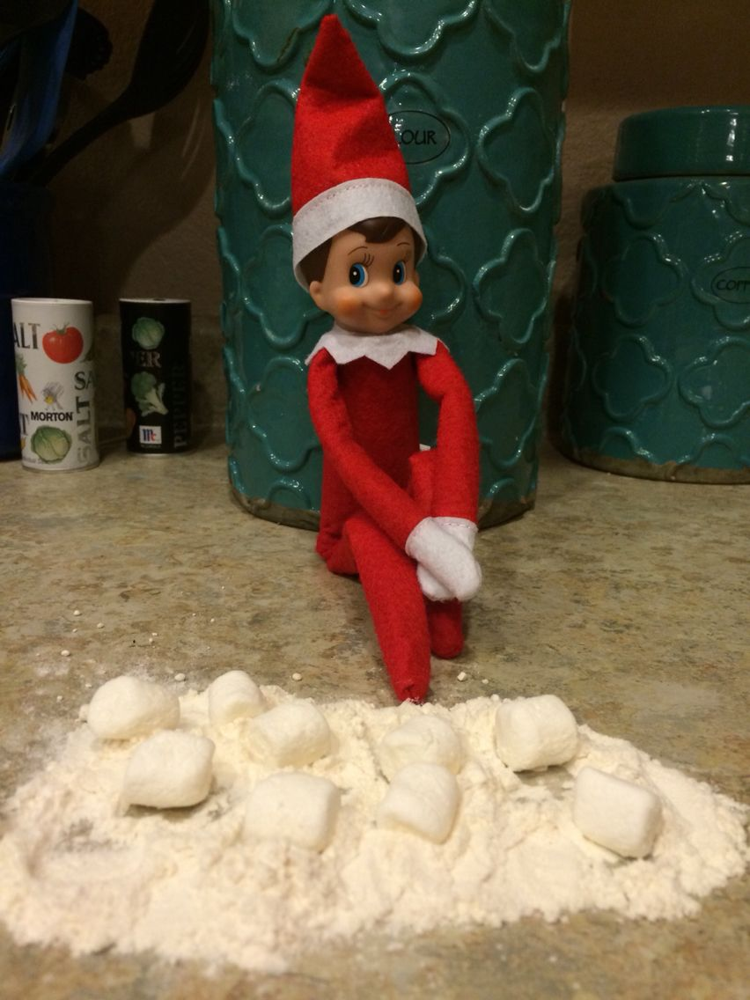

24 Elf on the Shelf Ideas for Christmas
1. Elf Leaves a Christmas Eve Goodbye
Save this one for Christmas Eve.
If a Santa photo, figurine, or costume is around, pose the elf sitting with Santa for one last picture, as if Santa's personally walking the elf home.
Otherwise, place the elf beside a small handwritten goodbye note and perhaps a tiny Christmas treat, explaining that the elf needs to head back to the North Pole to help Santa. After weeks of elaborate hiding spots, a quiet goodbye can actually feel more meaningful than one more big scene.
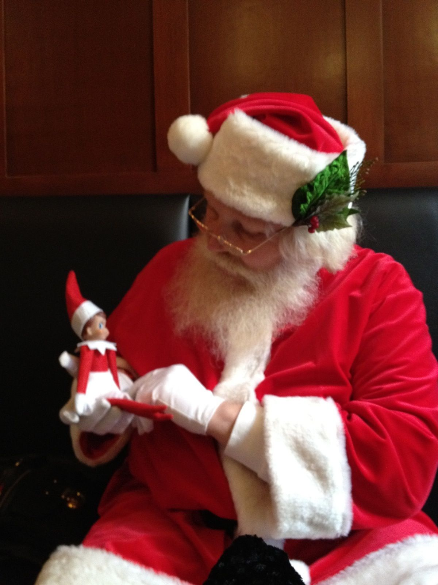
2. Elf Creates a Christmas Countdown
Make a homemade paper chain countdown and loop it around a light fixture or ceiling fan, then have the elf hang from it like it's swinging on the countdown itself.
Numbering each link lets the kids tear one off each morning to see how many days remain until Christmas.
This gives the elf a purpose beyond hiding and builds a small daily ritual that keeps the anticipation going.
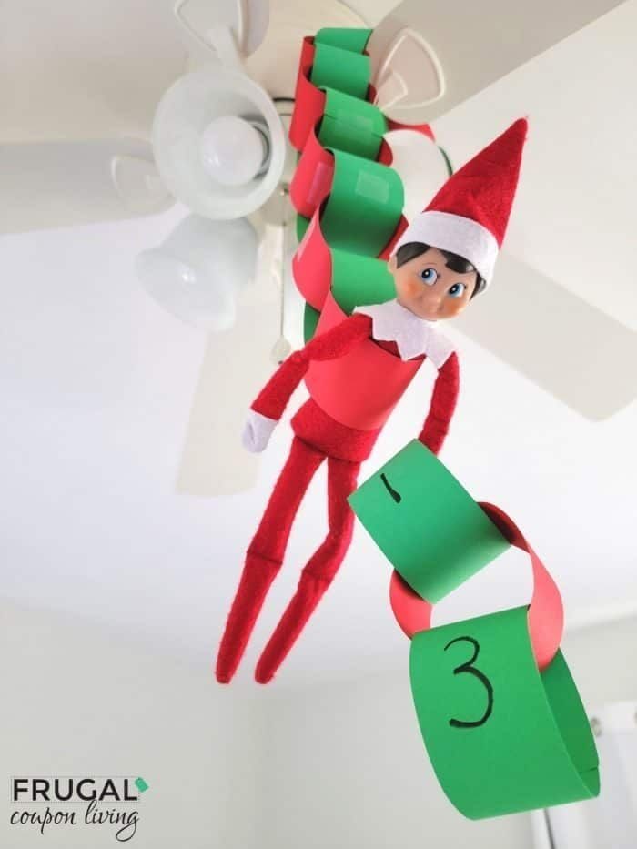
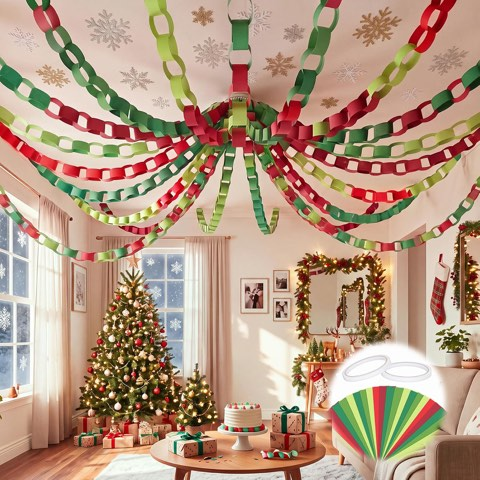
Crtiin 1000 Sheet Christmas Paper Chain Garland Strips, 1.77 x 8.27 Inch
Shop on Amazon3. Elf Goes Fishing
Create a tiny fishing scene using a cup, blue paper, and a piece of string.
Sit the elf beside the "pond," using paper fish instead of anything sharp or complicated. A toy fishing set works even better if one's on hand.
The whole scene takes about five minutes to build but looks like it was planned days in advance.
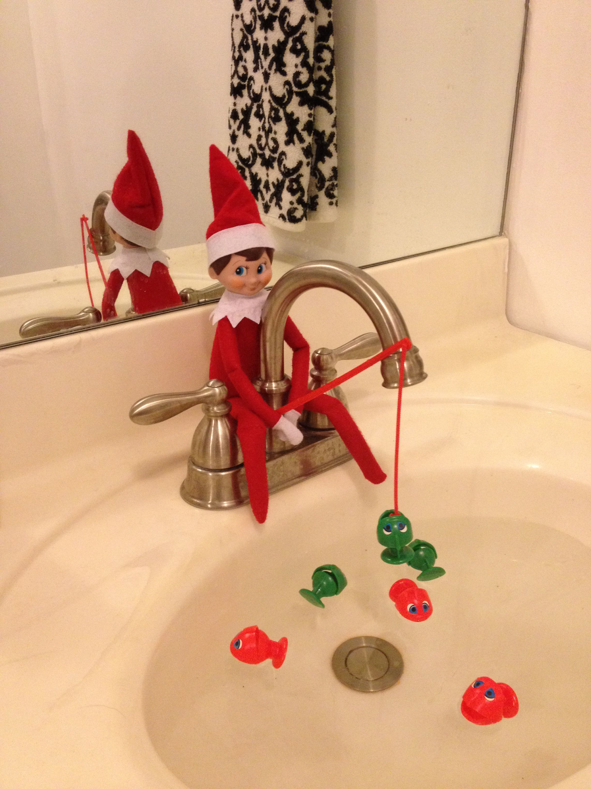
4. Elf Has a Pizza Party
Dress the elf up in a tiny felt pizza slice costume, complete with pepperoni dots, and tuck it in among the holiday decor for the kids to discover.
A paper pizza slice cut to fit around the elf works just as well without a costume.
Pizza-themed scenes fit naturally into the playful food-based side of this whole tradition.
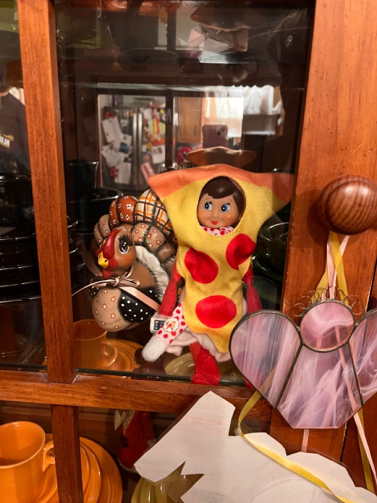
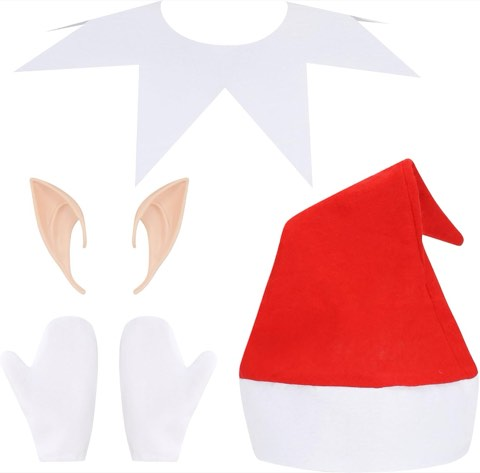
Christmas Elf Doll Costume Set, 4 Pcs, with Hat, Collar, Gloves and Ears
Shop on Amazon5. Elf Makes a Tiny Art Studio
Give the elf a piece of paper and some crayons.
Place a few drawings around the elf, then ask the kids to create something for the elf later that day.
Drawing activities and printable templates extend this one into an actual activity, turning a morning surprise into something that continues well past breakfast.
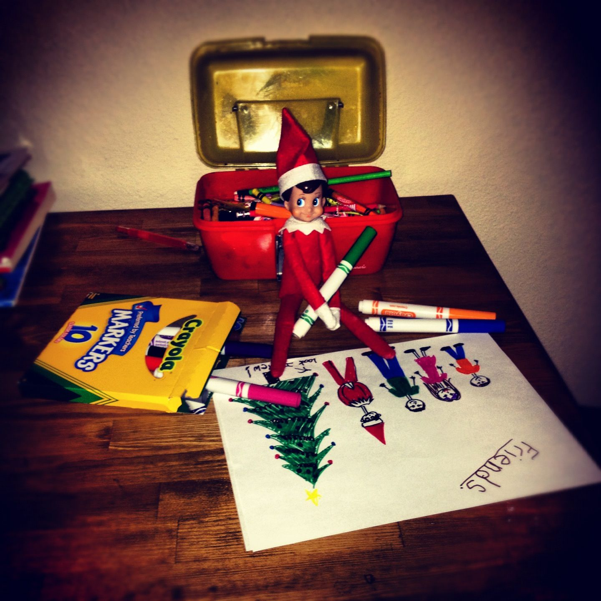
6. Elf Has a Snowball Fight With Stuffed Animals
Ball up little scraps of paper into tiny snowballs and scatter them between the elf and a second elf or stuffed animal sitting across the room.
Position everyone as if they just finished an intense snowball battle.
A small chalkboard sign propped up between them that reads "Snowball Fight Anyone?" sets the scene perfectly. The elf always seems to start the trouble and somehow looks innocent afterward.
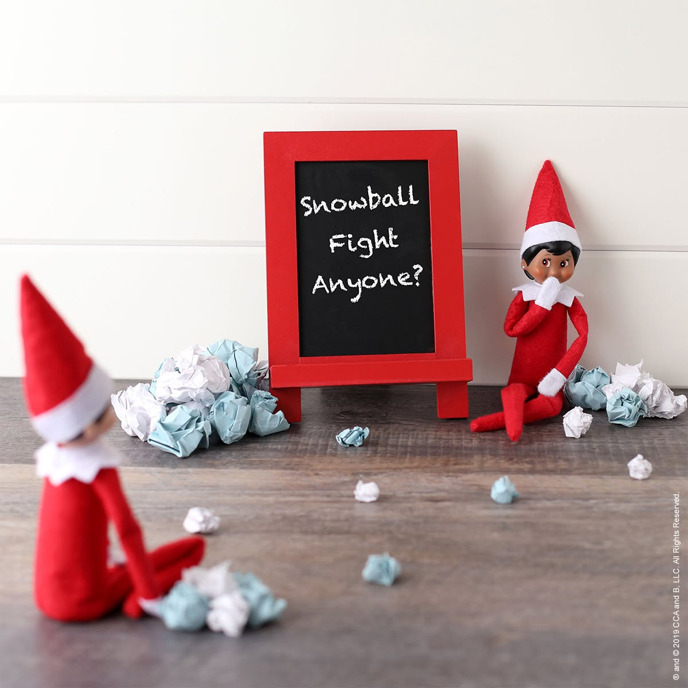
7. Elf Makes a Kindness Challenge
Have the elf model the challenge instead of just announcing it. Sit it in the sink with a tiny scrub brush, as if it already got started on today's kind deed.
Prop a small card nearby with a simple challenge, like "Do one kind thing today." A few age-appropriate options work well:
- Help clean up
- Share a toy
- Compliment someone
- Help with breakfast
- Write a thank-you note
The tradition becomes a lot more meaningful once the elf gets used to encourage kindness, rather than only creating silly messes.
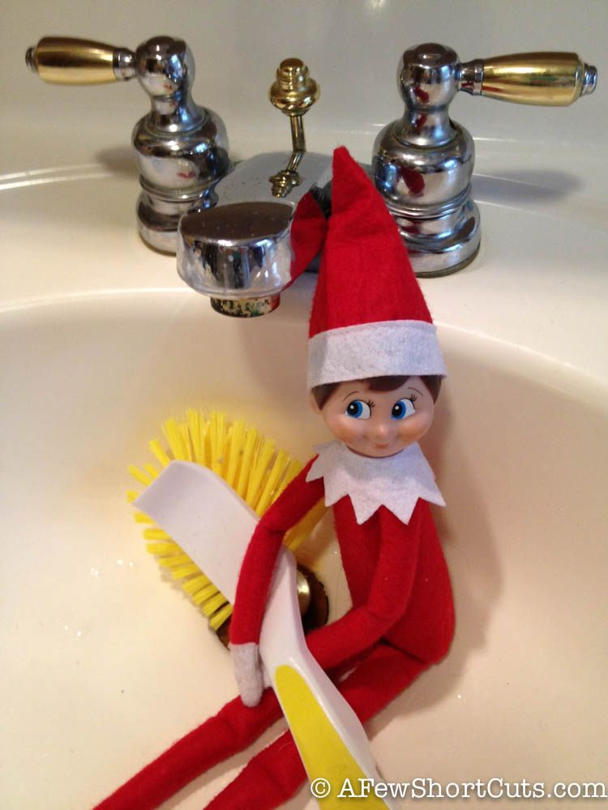
Youngever 300 Pack Motivational Quote Cards, 100 Unique Designs
Shop on Amazon8. Elf Gets Wrapped Like a Present
Grab a spool of ribbon and let the elf get completely wrapped up in it, as if it tried to wrap itself like a present and got a little too enthusiastic.
A second elf tangled up alongside the first doubles the trouble, if there's more than one in the house.
A tag nearby reading "To: The Best Kid Ever" finishes it off. This one feels especially magical during the final week before Christmas.
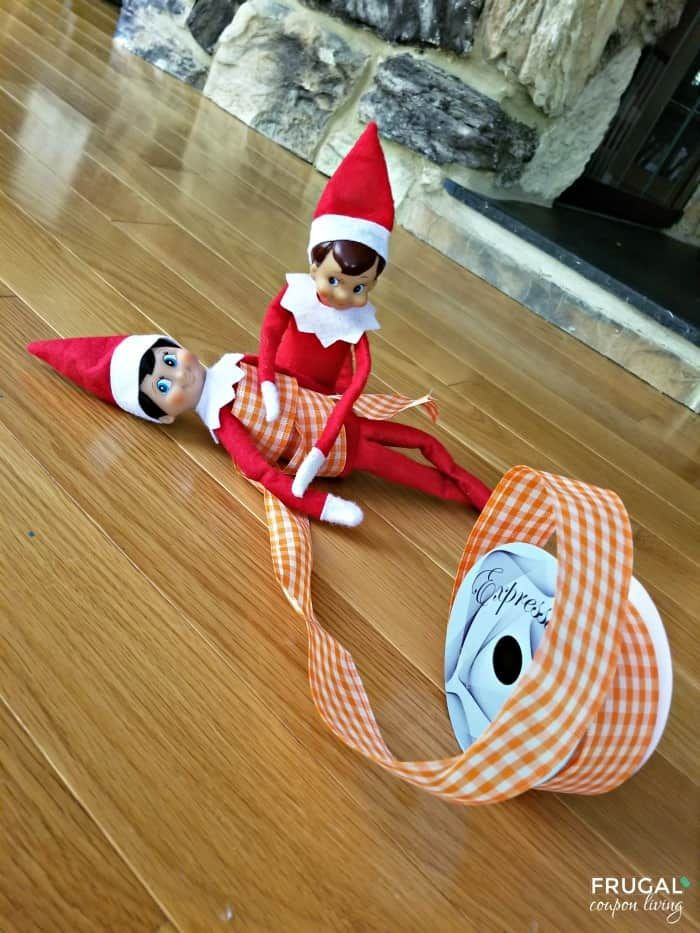
9. Elf Builds a Marshmallow Tower
Give the elf a pile of mini marshmallows and let it stack a few into a tiny marshmallow snowman right beside itself.
A simple face drawn on the top marshmallow, plus a few extra ones scattered around the "construction site," finishes the scene.
Skipping small pieces that could create a choking hazard matters here for younger kids, with adult supervision worth keeping in mind for any Scout Elf activity involving tiny parts.
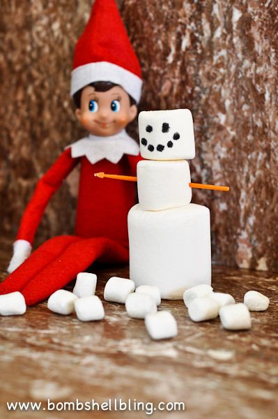
10. Elf Plays a Board Game
Set up a small board game and position the elf among a few stuffed animal friends like it's in the middle of a real game night.
A few game pieces scattered around, with the dice showing an obviously dramatic number, finishes the scene.
Kids love scenes that make the elf look like it genuinely has a personality of its own.
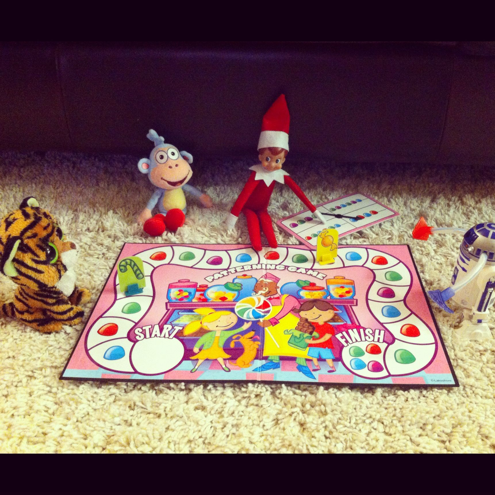
11. Elf Has a Dance Party
Pair the elf up with a Barbie or another doll and turn the scene into a tiny Christmas dance party.
Hanging a small disco ball overhead, or drawing a quick dance floor on paper underneath them, finishes the look.
Placing the pair near a speaker works fine too, without turning the setup into an actual electrical experiment. Dance parties show up often among official Scout Elf scene ideas for good reason.
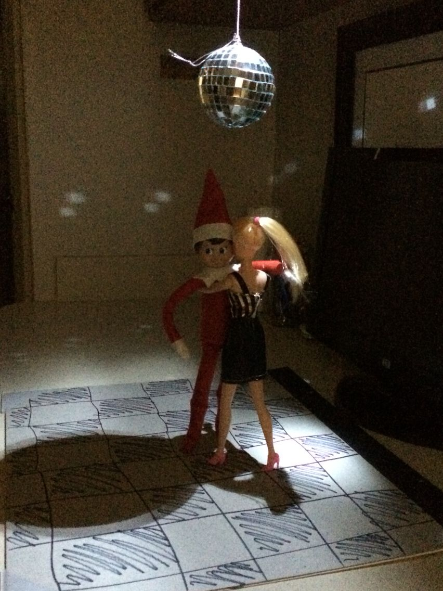
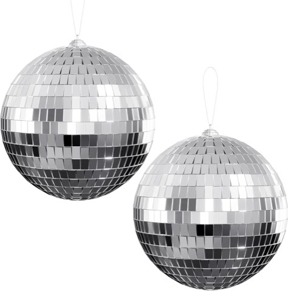
Youdepot Silver Mirror Disco Balls, 4 Inch, 2 Pack, with Hanging Strings
Shop on Amazon12. Elf Hides in the Fridge
Wrap the elf in a small towel or scarf and tuck it somewhere safe inside the refrigerator.
Add a note that says, "It's freezing up here!"
Keeping the elf away from any food that could create a hygiene issue matters, and the placement shouldn't interfere with the fridge door closing properly. This one works especially well when the kids expect the elf to show up somewhere warm instead.
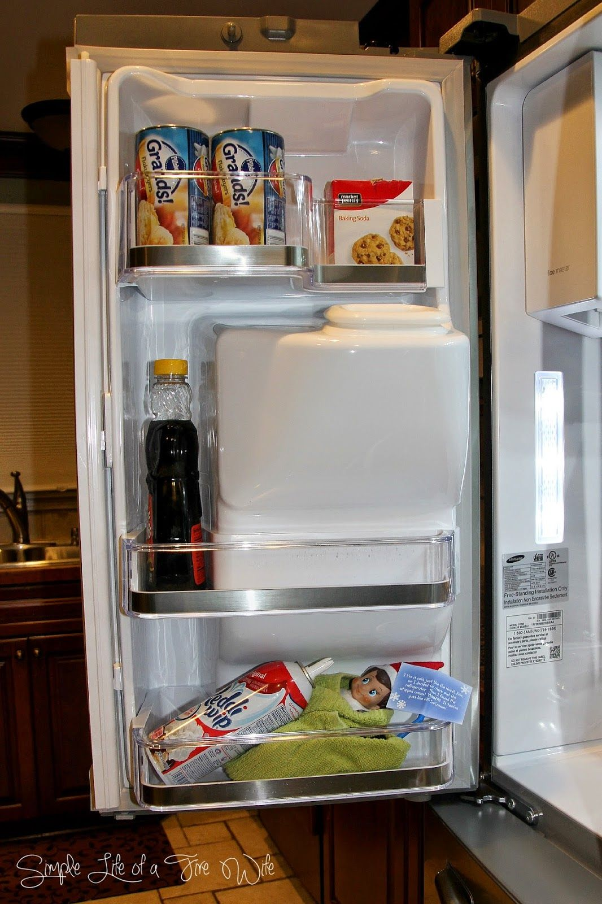
13. Elf Makes a Paper Snow Angel
Turn a small toy laundry basket into a pretend snow machine and sit the elf right on top of it.
Scatter cotton balls or pieces of white paper across the floor around the basket, as if the elf just sprayed snow everywhere.
A tiny scarf or hat, if one's around, finishes the scene. It delivers the whole winter feeling without bringing actual snow into the living room.
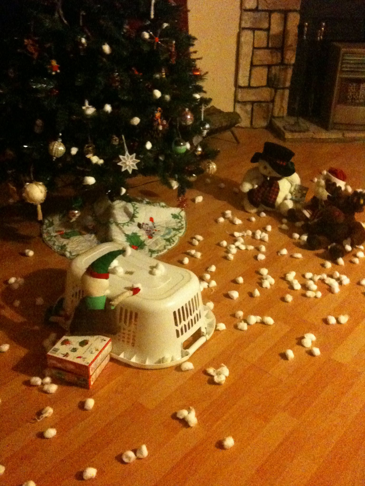
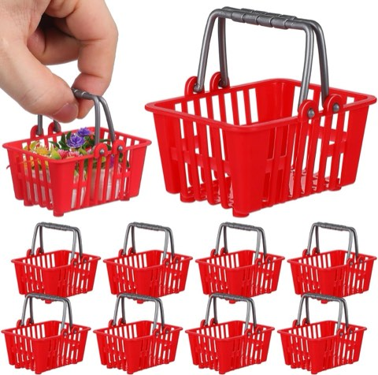
Toddmomy Mini Red Plastic Shopping Baskets, 10 Pcs, Dollhouse Accessories
Shop on Amazon14. Elf Gets Into the Cookie Jar
Put the elf beside the cookie jar with a few crumbs around its feet.
One cookie placed directly in the elf's hands makes the scene even funnier.
Leave a note saying, "I couldn't resist." Honestly, that's a pretty fair excuse.
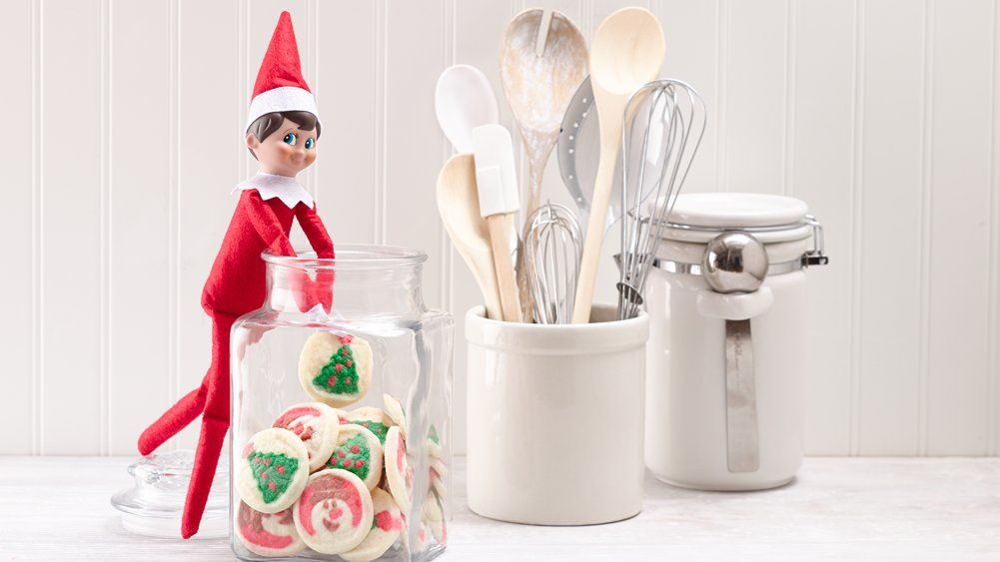
15. Elf Makes a Candy Cane Swing
Tie a ribbon or string between two sturdy points, like a light fixture, and attach a candy cane to create a tiny swing.
Place the elf on the swing. A second swing right beside it works well for a matching pair, if there's more than one elf in the house.
This scene looks genuinely adorable in photos, but securing everything properly and keeping small materials away from young children who might grab them matters just as much as the look.
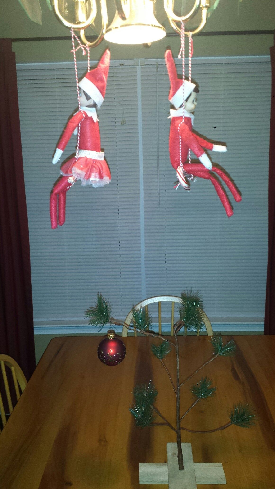
Karenhi Large Christmas Candy Canes Tree Ornaments, 15.7 Inch, 4 Pcs
Shop on Amazon
16. Elf Has a Movie Night
Create a miniature movie theater using a tablet or TV in the background, a few stuffed animals, and popcorn.
Give the elf a tiny bowl of popcorn, and a little sign reading "Elf Movie Night" finishes the scene.
Movie night setups show up often among official Scout Elf surprise ideas, which says something about how reliably this one lands.
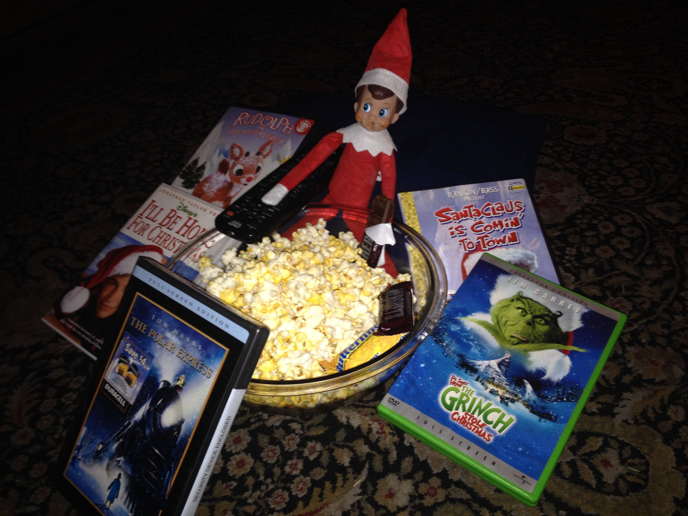
Mega Pop Popcorn Portion Packs, 10.6 oz, 6 Count
Shop on AmazonThe Complete Rankin/Bass Christmas Collection, DVD
Shop on Amazon17. Elf Reads a Book
Place the elf in front of a favorite children's book with stuffed animals sitting around it.
Opening the book to a colorful page, and tucking a small blanket underneath everyone, makes the scene feel even sweeter.
This setup works particularly well near bedtime, since it doubles as a reminder to actually read together that night.
The Elf on the Shelf Bundle: Official Elf Ideas Super Set and Santa's Activity Book
Shop on AmazonMini Stuffed Animals Bulk, 12 Pack, 5 Inch Plush Keychain Toys
Shop on Amazon18. Elf Writes a Christmas Note
Sit the elf beside a message built entirely out of colorful sticky notes on the wall or fridge.
Shaping the notes into a little Christmas tree and a snowflake, then spelling out something simple underneath, like a name or a short word, finishes the display.
A real note nearby that says something like, "Good morning! I noticed how kind you were yesterday. Keep spreading Christmas cheer!" turns the elf into more than just a hiding game. A tiny personal message can feel a lot more special than an elaborate setup ever does.
Eastern Wolf Sticky Notes, 3 x 3 Inch, 8 Bright Colors, 85 Sheets per Pad
Shop on AmazonSticky Notes, 3 x 3 Inch, 24 Pads, 12 Bright Colors, Self-Stick
Shop on Amazon19. Elf Creates a Toilet Paper Snowman
Wrap a small amount of toilet paper around a toy, or stack toilet paper rolls, to create a tiny snowman scene.
Two black dots for eyes and a little paper carrot nose finish the look.
Put the elf beside the creation with a marker nearby. The mess stays relatively small, but the kids get the impression the elf spent the whole night getting creative.
Snowman Face Stickers, 72 Pcs, 2 Sizes, for Crafts
Shop on AmazonAngel Soft Toilet Paper, 4 Mega Rolls, 2-Ply
Shop on Amazon20. Elf Hides in the Christmas Tree
Sometimes the simplest idea wins.
Place the elf somewhere inside the Christmas tree and let the kids search for it in the morning.
Moving the elf to a different branch each night keeps the game feeling slightly different every time, and it requires zero extra supplies, which makes it one of the best backup setups to have ready.
Starburst Candy Canes, Green Apple, Lemon and Strawberry, 5.3 oz Box
Shop on AmazonRAZ Imports Vintage Traditional Glass Christmas Ornaments, 2 Inch, Set of 12
Shop on Amazon21. Elf Takes a Bubble Bath
Give the elf a tiny "bath" using a bowl, mug, or small container filled with mini marshmallows to look like bubbles.
Place the elf inside, add a towel nearby, and scatter a few small bath toys around the scene.
A proper spa setup, built from a washcloth, bowl, marshmallows, and paper decorations, takes the idea even further. After all that nightly flying, the elf has genuinely earned a spa day.
Pyrex Essentials 3-Piece Glass Mixing Bowls Set
Shop on AmazonJOYIN 30 Pcs Mini Rubber Ducks with Mesh Carry Bag
Shop on Amazon22. Elf Has a Marshmallow Snowball Fight
Grab some mini marshmallows and place them around the room.
Stack a few marshmallows into a small fort as the elf's pretend hiding spot, then knock over a stuffed snowman on the opposite side like it just lost the battle.
A tiny handmade sign that says "Caution: Snowball Fight!!!" adds a nice finishing touch. This one works especially well with several toys ready to join the scene.
Campfire Mini Marshmallows, Vanilla Flavored, Gluten Free, 1 lb Bag
Shop on AmazonAurora Festive Palm Pals Freeze Snowman Stuffed Animal
Shop on Amazon23. Elf Gets Tangled in Christmas Lights
Wrap a short strand of unplugged Christmas lights loosely around the elf and place it near the Christmas tree.
Make the scene look like the elf tried to decorate the tree and got completely tangled in the process.
Keeping the lights unplugged and away from heat sources matters here, since placing the elf or anything flammable near flames or electrical sources isn't worth the risk for one photo.
Battery Operated Fairy Lights, 6 Pack, 7 ft 20 LED Twinkle Lights, 3 Modes
Shop on AmazonWhaline 50 Pcs Christmas Elf Note Cards, 4 x 6 Inch, Blank Stationery
Shop on Amazon24. Elf Makes a Cereal Breakfast
Put the elf beside a bowl of cereal with a tiny spoon and a few cereal pieces scattered around.
For an extra laugh, place the elf inside the cereal box with only its head sticking out, and leave a little note saying, "Breakfast was delicious!"
This setup takes almost no time at all, which makes it perfect for the nights the elf gets completely forgotten until everyone's already in bed.
Cheerios Heart Healthy Breakfast Cereal, Giant Size, 20 oz, Pack of 4
Shop on AmazonDemitasse Espresso Spoons, 4.7 Inch Stainless Steel Coffee Spoons
Shop on AmazonHow to Keep Elf on the Shelf Ideas From Becoming Exhausting
Here's the part nobody puts on the cute Pinterest graphic.
A brand-new masterpiece every single night was never actually required. Building elaborate scenes every day eventually leads to standing in the kitchen at midnight wondering why this tradition ever got started in the first place.
A simple rotation solves most of it:
- Funny setup
- Hiding spot
- Activity
- Kindness message
- Snack surprise
- Simple note
- Bigger weekend scene
Repeating that pattern, and prepping several scenes in advance in separate labeled bags, saves real sanity later on. Choosing ideas that actually match the family using them matters more than following any particular list exactly, whether that means quick setups or full crafts and recipes.
The Elf on the Shelf Polar Props Super Daily Scene Kit
Shop on AmazonZiploc Gallon Freezer Bags, Stand-Up Bottom, 66 Count
Shop on AmazonEasy Elf on the Shelf Ideas for Busy Parents
Five minutes is plenty. No need to panic.
A handful of these cover almost any night with zero prep time:
- Hide the elf in a stocking
- Put the elf inside the cereal box
- Place the elf beside the toothbrushes
- Sit the elf on the Christmas tree
- Give the elf a candy cane
- Put the elf inside a gift bag
- Place the elf beside a handwritten note
- Hide the elf underneath the Christmas tree
- Give the elf a "car wash" using a sponge and a pile of toy cars
These setups prove something worth remembering: the magic comes from the surprise, not the production value. Nobody knows how long a scene actually took to arrange, they just know the elf moved. And that alone makes for a pretty exciting morning.
Scotch-Brite Zero Scratch Scrub Sponge, 6 Pack
Shop on AmazonHot Wheels 10-Pack Toy Cars, Styles May Vary
Shop on AmazonA Few Elf on the Shelf Safety Tips
Fun comes first, but safety matters too.
Adult supervision for these activities is worth keeping in mind, along with basic awareness around choking hazards, sharp objects, and anything electrical or near an open flame. A few basics cover most of it:
- Keep small objects away from toddlers
- Avoid sharp craft materials around children
- Keep the elf away from candles and open flames
- Don't place the elf near hot appliances
- Keep food allergies in mind when using snacks
- Use stable surfaces for climbing or hanging scenes
- Avoid electrical setups that could create a hazard
The goal is a fun morning surprise, not an elf version of an action movie.
Do Kids Have to Follow the Elf on the Shelf Rules?
The traditional story comes with a few basic rules.
Kids generally aren't supposed to touch the Scout Elf, since the tradition claims that breaks its magic. Scout Elves also don't talk, even though kids are welcome to talk to them.
Every family gets to decide how strictly to follow any of that. Some stick to the rules exactly. Others build their own version entirely.
Consistency matters more than precision here. Treating the elf as a magical visitor works as long as the story stays simple and fun, and if someone accidentally touches the elf, a quick made-up story keeps the Christmas morning magic moving right along without missing a beat.
Why Simple Elf on the Shelf Ideas Often Work Better
The best Elf on the Shelf ideas tend to share one quality: they create actual interaction.
A complicated scene looks impressive for about five minutes. An elf leaving a note that says, "Can you help me make Christmas cookies today?" gives a kid something real to actually do. That's a much bigger win.
The tradition is really built around creating family bonds through reading, finding the elf, laughing together, and talking about whatever happened that morning, sparking real conversation along the way.
That's really the heart of it. The elf doesn't need to become one more chore on a December checklist. It works better as a small excuse to laugh together.
Measured against that standard, a five-second scene that gets the kids genuinely talking at breakfast beats an hour-long production that just gets a quick glance and a shrug.
Final Thoughts on These Elf on the Shelf Ideas
Expensive props, complicated crafts, or a perfectly staged Christmas morning were never actually required to make this tradition memorable.
Start with simple hiding spots. Add funny scenes whenever there's more time. Use notes and kindness challenges when the tradition should feel a bit more meaningful.
Most importantly, comparing one setup against someone else's online isn't worth the energy.
The elf can sit inside a cereal box one morning and build an elaborate marshmallow tower the next. Nobody needs perfection.
The kids probably won't remember whether the elf setup was the most impressive one on the internet that year. They'll remember waking up, running downstairs, searching the room, and shouting, "I found him!" And honestly, isn't that the whole point?
Keep the box of supplies stocked, pick a rotation that fits the family, and let the rest of the month take care of itself from there.